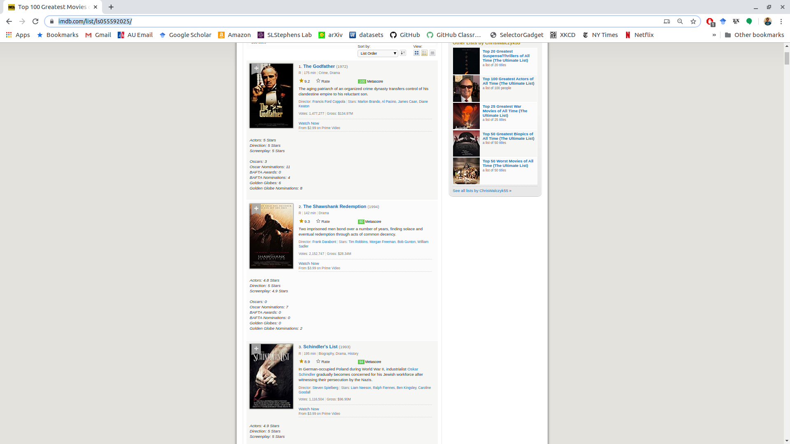
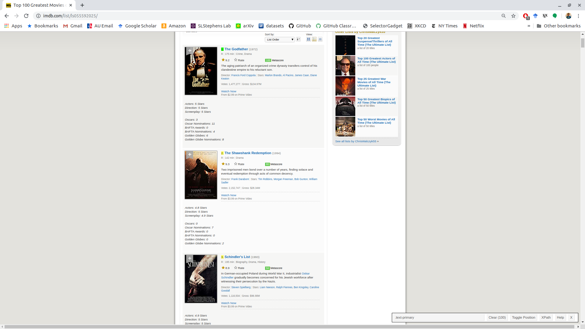
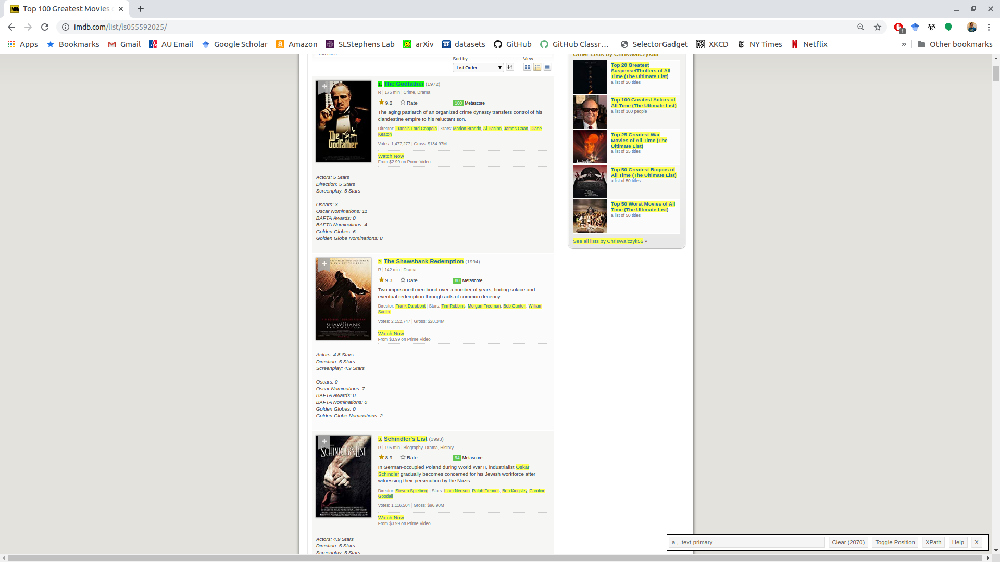
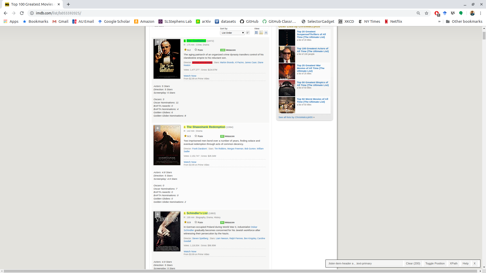
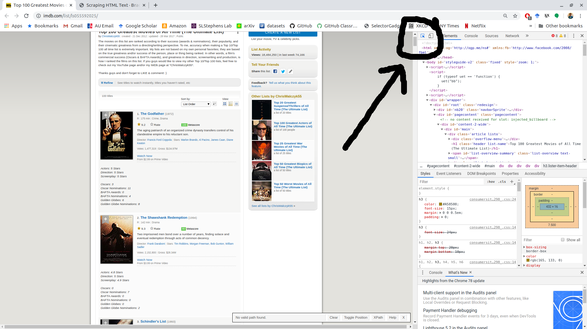
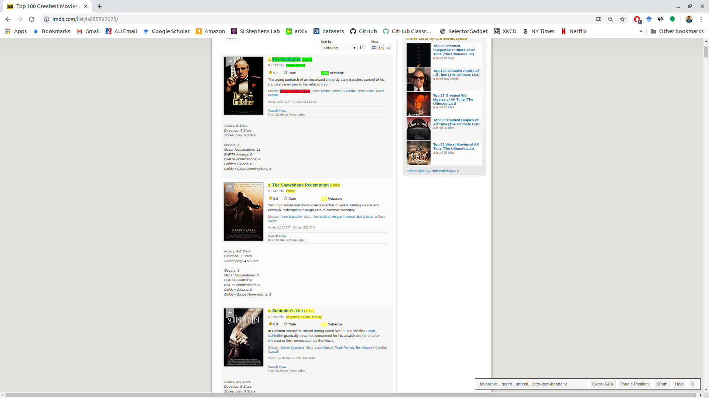

library(tidyverse)Web Scraping with rvest
Learning Objectives
- Basics of Web Scraping
- Chapter 24 of RDS
- Overview of rvest.
- SelectorGadget.
- Web Scraping
Data on the Web
There are at least 4 ways people download data on the web:
- Click to download a csv/xls/txt file.
- Use a package that interacts with an API.
- Use an API directly.
- Scrape from directly from the HTML file.
This lesson, we talk about how to do 4.
Note: You shouldn’t download thousands of HTML files from a website to parse — the admins might block you if you send too many requests.
Note: Web scraping can be illegal in some circumstances, particularly if you intend to make money off of it or if you are collecting personal information. I don’t give legal advice, so see Chapter 24 of RDS for some general recommendations, and talk to a lawyer if you are not sure.
Let’s load the tidyverse:
CSS
We have to know a little bit about HTML and CSS in order to understand how to extract certain elements from a website.
CSS stands from “Cascading Style Sheets”. It’s a formatting language that indicates how HTML files should look. Every website you have been on is formatted with CSS.
Here is some example CSS:
h3 { color: red; font-style: italic; } footer div.alert { display: none; }The part before the curly braces is called a selector. It corresponds to HTML tags. Specifically, for those two they would correspond to:
<h3>Some text</h3> <footer> <div class="alert">More text</div> </footer>The code inside the curly braces are properties. For example, the h3 properties tells us to make the h3 headers red and in italics. The second CSS chunk says that all
<div>tags of class"alert"in the<footer>should be hidden.CSS applies the same properties to the same selectors. So every time we use h3 will result in the h3 styling of red and italicized text.
CSS selectors define patterns for selecting HTML elements. This is useful for scraping because we can extract all text in an HTML that corresponds to some CSS selector.
You can get a long way just selecting all
pelements (standing for “paragraph”) since that is where a lot of text lives. Also.titleand#title.
SelectorGadget
SelectorGadget is a tool for you to see what selector influences a particular element on a website.
To install SelectorGadget, drag this link to your bookmark bar on Chrome: SelectorGadget
Suppose we wanted to get the top 100 movies of all time from IMDB. The web page is very unstructured:
https://www.imdb.com/list/ls055592025/

If we click on the ranking of the Godfather, the “1” turns green (indicating what we have selected).

The “.text-primary” is the selector associated with the “1” we clicked on.
Everything highlighted in yellow also has the “.text-primary” selector associated with it.
We will also want the name of the movie. So if we click on that we get the selector associated with both the rank and the movie name: “a , .text-primary”.

But we also got a lot of stuff we don’t want (in yellow). If we click one of the yellow items that we don’t want, it turns red. This indicates that we don’t want to select it.

Only the ranking and the name remain, which are under the selector “.lister-item-header a , .text-primary”.
It’s important to visually inspect the selected elements throughout the whole HTML file. SelectorGadget doesn’t always get all of what you want, or it sometimes gets too much.
Exercise: What selector can we use to get just the genres of each film, the metacritic score, and the IMDB rating?
Chrome developer tools:
If you have trouble with SelectorGadget, you can also use the Chrome developer tools.
Open up the list of selectors with: ⋮ > More tools > Developer tools.
Clicking on the element selector on the top left of the developer tools will show you what selectors are possible with each element.

rvest
We’ll use rvest to extract elements from HTML files.
library(rvest)Use
read_html()to save an HTML file to a variable. The variable will be an “xml_document” objecthtml_obj <- read_html("https://www.imdb.com/list/ls055592025/") html_obj class(html_obj)XML stands for “Extensible Markup Language”. It’s a markup language (like HTML and Markdown), useful for representing data. rvest will store the HTML file as an XML.
We can use
html_elements()and the selectors we found in the previous section to get the elements we want. Insert the found selectors as thecssargument.ranking_elements <- html_elements(html_obj, css = ".lister-item-header a , .text-primary") head(ranking_elements){xml_nodeset (6)} [1] <span class="lister-item-index unbold text-primary">1.</span> [2] <a href="/title/tt0068646/?ref_=ttls_li_tt">The Godfather</a> [3] <span class="lister-item-index unbold text-primary">2.</span> [4] <a href="/title/tt0111161/?ref_=ttls_li_tt">The Shawshank Redemption</a> [5] <span class="lister-item-index unbold text-primary">3.</span> [6] <a href="/title/tt0108052/?ref_=ttls_li_tt">Schindler's List</a>Note:
html_element()is similar, but will return exactly one response per element, so is useful if some elements have missing components.To extract the text inside the obtained nodes, use
html_text()orhtml_text2():html_text2()just does a little more pre-formatting (like converting line breaks from HTML to R code, removing white spaces, etc). So you should typically use this.
ranking_text <- html_text2(ranking_elements) head(ranking_text)[1] "1." "The Godfather" [3] "2." "The Shawshank Redemption" [5] "3." "Schindler's List"After you do this, you need to tidy the data using your data munging tools.
tibble(text = ranking_text) |> mutate(rownum = row_number(), iseven = rownum %% 2 == 0, movie = rep(1:100, each = 2)) |> select(-rownum) |> spread(key = "iseven", value = "text") |> select(-movie, "Rank" = "FALSE", movie = "TRUE") |> mutate(Rank = parse_number(Rank)) -> movierank movierank# A tibble: 100 × 2 Rank movie <dbl> <chr> 1 1 The Godfather 2 2 The Shawshank Redemption 3 3 Schindler's List 4 4 Raging Bull 5 5 Casablanca 6 6 Citizen Kane 7 7 Gone with the Wind 8 8 The Wizard of Oz 9 9 One Flew Over the Cuckoo's Nest 10 10 Lawrence of Arabia # ℹ 90 more rowsExercise: Extract the directors and the names of each film. You can extract them separately and combine them.
Bigger example using rvest
Let’s try and get the name, rank, year, genre, and metascore for each movie:

We copy the CSS selectors and make a text vector
dataobj <- html_elements(html_obj, css = ".favorable , .genre, .unbold, .lister-item-header a") datatext <- html_text(dataobj)We now have a lot of cleaning to do. Note that the first 132 elements we didn’t even want:
head(datatext)[1] "\n Prime Video\n (15)\n " [2] "\n IMDb TV\n (2)\n " [3] "\n Prime Video (Rent or Buy)\n (95)\n " [4] "\n Drama\n (80)\n " [5] "\n Romance\n (25)\n " [6] "\n Adventure\n (18)\n "datatext[130:136][1] "\n Anti Hero\n (16)\n " [2] "\n Cigar Smoking\n (16)\n " [3] "\n Good Versus Evil\n (16)\n " [4] "1." [5] "The Godfather" [6] "(1972)" [7] "\nCrime, Drama "The rankings are always of the form
"\\d+\\.". We’ll use this and a cumulative sum to indicate which movies the variables belong to. This is necessary because some data have elements that are missing (e.g. “The Great Dictator” doesn’t have a metacritic score).datadf <- tibble(text = datatext) datadf |> mutate(ismovierank = str_detect(text, "^\\d+\\.$")) -> datadf ## make sure it is 100 sum(datadf$ismovierank)[1] 100## get movie numbers and remove non-movie elements: datadf |> mutate(movienum = cumsum(ismovierank)) |> filter(movienum > 0) -> datadf datadf# A tibble: 496 × 3 text ismovierank movienum <chr> <lgl> <int> 1 "1." TRUE 1 2 "The Godfather" FALSE 1 3 "(1972)" FALSE 1 4 "\nCrime, Drama " FALSE 1 5 "100 " FALSE 1 6 "2." TRUE 2 7 "The Shawshank Redemption" FALSE 2 8 "(1994)" FALSE 2 9 "\nDrama " FALSE 2 10 "80 " FALSE 2 # ℹ 486 more rowsWe’ll use the
movierank$movievariable we created before see which rows are movie namesdatadf |> mutate(isname = text %in% movierank$movie) -> datadf ## make sure we have 100 movies: sum(datadf$isname)[1] 100datadf# A tibble: 496 × 4 text ismovierank movienum isname <chr> <lgl> <int> <lgl> 1 "1." TRUE 1 FALSE 2 "The Godfather" FALSE 1 TRUE 3 "(1972)" FALSE 1 FALSE 4 "\nCrime, Drama " FALSE 1 FALSE 5 "100 " FALSE 1 FALSE 6 "2." TRUE 2 FALSE 7 "The Shawshank Redemption" FALSE 2 TRUE 8 "(1994)" FALSE 2 FALSE 9 "\nDrama " FALSE 2 FALSE 10 "80 " FALSE 2 FALSE # ℹ 486 more rowsYears are surrounded by parentheses:
datadf |> mutate(isyear = str_detect(text, "\\(\\d+\\)")) -> datadf ## make sure it is 100 sum(datadf$isyear)[1] 100datadf# A tibble: 496 × 5 text ismovierank movienum isname isyear <chr> <lgl> <int> <lgl> <lgl> 1 "1." TRUE 1 FALSE FALSE 2 "The Godfather" FALSE 1 TRUE FALSE 3 "(1972)" FALSE 1 FALSE TRUE 4 "\nCrime, Drama " FALSE 1 FALSE FALSE 5 "100 " FALSE 1 FALSE FALSE 6 "2." TRUE 2 FALSE FALSE 7 "The Shawshank Redemption" FALSE 2 TRUE FALSE 8 "(1994)" FALSE 2 FALSE TRUE 9 "\nDrama " FALSE 2 FALSE FALSE 10 "80 " FALSE 2 FALSE FALSE # ℹ 486 more rowsGenre’s begin with a new line:
datadf |> mutate(isgenre = str_detect(text, "^\\n")) -> datadf ## make sure it is 100 sum(datadf$isgenre)[1] 100Everything else should be the metacritic score:
datadf |> group_by(ismovierank, isname, isyear, isgenre) |> count()# A tibble: 5 × 5 # Groups: ismovierank, isname, isyear, isgenre [5] ismovierank isname isyear isgenre n <lgl> <lgl> <lgl> <lgl> <int> 1 FALSE FALSE FALSE FALSE 96 2 FALSE FALSE FALSE TRUE 100 3 FALSE FALSE TRUE FALSE 100 4 FALSE TRUE FALSE FALSE 100 5 TRUE FALSE FALSE FALSE 100datadf |> mutate(ismeta = !ismovierank & !isname & !isyear & !isgenre) -> datadf datadf# A tibble: 496 × 7 text ismovierank movienum isname isyear isgenre ismeta <chr> <lgl> <int> <lgl> <lgl> <lgl> <lgl> 1 "1." TRUE 1 FALSE FALSE FALSE FALSE 2 "The Godfather" FALSE 1 TRUE FALSE FALSE FALSE 3 "(1972)" FALSE 1 FALSE TRUE FALSE FALSE 4 "\nCrime, Drama … FALSE 1 FALSE FALSE TRUE FALSE 5 "100 " FALSE 1 FALSE FALSE FALSE TRUE 6 "2." TRUE 2 FALSE FALSE FALSE FALSE 7 "The Shawshank Redemption" FALSE 2 TRUE FALSE FALSE FALSE 8 "(1994)" FALSE 2 FALSE TRUE FALSE FALSE 9 "\nDrama " FALSE 2 FALSE FALSE TRUE FALSE 10 "80 " FALSE 2 FALSE FALSE FALSE TRUE # ℹ 486 more rowsLet’s create a key for these data then spread them:
datadf |> mutate(key = case_when(ismovierank ~ "rank", isname ~ "name", isyear ~ "year", isgenre ~ "genre", ismeta ~ "metacritic")) |> select(key, text, movienum) |> spread(key = "key", value = "text") -> datawide datawide# A tibble: 100 × 6 movienum genre metacritic name rank year <int> <chr> <chr> <chr> <chr> <chr> 1 1 "\nCrime, Drama " "100 … The … 1. (197… 2 2 "\nDrama " "80 … The … 2. (199… 3 3 "\nBiography, Drama, History … "94 … Schi… 3. (199… 4 4 "\nBiography, Drama, Sport " "89 … Ragi… 4. (198… 5 5 "\nDrama, Romance, War " "100 … Casa… 5. (194… 6 6 "\nDrama, Mystery " "100 … Citi… 6. (194… 7 7 "\nDrama, History, Romance " "97 … Gone… 7. (193… 8 8 "\nAdventure, Family, Fantasy … "100 … The … 8. (193… 9 9 "\nDrama " "83 … One … 9. (197… 10 10 "\nAdventure, Biography, Drama … "100 … Lawr… 10. (196… # ℹ 90 more rowsLet’s clean up the remaining variables:
datawide |> mutate(genre = str_replace_all(genre, "\\n", ""), genre = str_squish(genre), metacritic = parse_number(metacritic), rank = parse_number(rank), year = parse_number(year)) -> datawide datawide# A tibble: 100 × 6 movienum genre metacritic name rank year <int> <chr> <dbl> <chr> <dbl> <dbl> 1 1 Crime, Drama 100 The Godfather 1 1972 2 2 Drama 80 The Shawshank Re… 2 1994 3 3 Biography, Drama, History 94 Schindler's List 3 1993 4 4 Biography, Drama, Sport 89 Raging Bull 4 1980 5 5 Drama, Romance, War 100 Casablanca 5 1942 6 6 Drama, Mystery 100 Citizen Kane 6 1941 7 7 Drama, History, Romance 97 Gone with the Wi… 7 1939 8 8 Adventure, Family, Fantasy 100 The Wizard of Oz 8 1939 9 9 Drama 83 One Flew Over th… 9 1975 10 10 Adventure, Biography, Drama 100 Lawrence of Arab… 10 1962 # ℹ 90 more rows
html_table()
When data is in the form of a table, you can format it more easily with
html_table().The Wikipedia article on hurricanes: https://en.wikipedia.org/wiki/Atlantic_hurricane_season
This contains many tables which might be a pain to copy and paste into Excel (and we would be prone to error if we did so). Let’s try to automate this procedure.
Save the HTML
wikixml <- read_html("https://en.wikipedia.org/wiki/Atlantic_hurricane_season")We’ll extract all of the “table” elements.
wikidat <- html_elements(wikixml, "table")Use
html_table()to get a list of tables from table elements:tablist <- html_table(wikidat) class(tablist)[1] "list"length(tablist)[1] 20tablist[[19]] |> select(1:4)# A tibble: 11 × 4 Year Map `Number oftropical cyclones` `Number oftropical storms` <chr> <chr> <int> <int> 1 2010 "" 21 19 2 2011 "" 20 19 3 2012 "" 19 19 4 2013 "" 15 14 5 2014 "" 9 8 6 2015 "" 12 11 7 2016 "" 16 15 8 2017 "" 18 17 9 2018 "" 16 15 10 2019 "" 18 16 11 Total "Total" 164 153You can clean up, bind, or merge these tables after you have read them in.
Exercise: The Wikipedia page on the oldest mosques in the world has many tables.
https://en.wikipedia.org/wiki/List_of_the_oldest_mosques
- Use rvest to read these tables into R.
- Use rvest and SelectorGadget to extract out the category for the table (mentioned in Quran, in northeast Africa, etc).
- Merge the data frames together. You only need to keep the building name, the country, and the time it was first build.
Hint: It’s easier if you use a css selector of
"table.wikitable"to get the table rather than just"table". I found this out by getting to the developer tools in Chrome with CTRL + Shift + I then playing around with the tables.The first 15 rows should look like this:
# A tibble: 15 × 4 Building Country fb category <chr> <chr> <chr> <chr> 1 Al-Haram Mosque Saudi Arabia <NA> Mentioned in the Quran 2 Al-Aqsa Mosque Palestine <NA> Mentioned in the Quran 3 The Sacred Monument Saudi Arabia <NA> Mentioned in the Quran 4 Quba Mosque Saudi Arabia 622 Mentioned in the Quran 5 Mosque of the Companions Eritrea 610 Northeast Africa 6 Negash Āmedīn Mesgīd Ethiopia 620 Northeast Africa 7 Masjid al-Qiblatayn Somalia 620 Northeast Africa 8 Korijib Masjid Djibouti 630 Northeast Africa 9 Mosque of Amr ibn al-As Egypt 641 Northeast Africa 10 Mosque of Ibn Tulun Egypt 879 Northeast Africa 11 Al-Hakim Mosque Egypt 928 Northeast Africa 12 Al-Azhar Mosque Egypt 972 Northeast Africa 13 Arba'a Rukun Mosque Somalia 1268 Northeast Africa 14 Fakr ad-Din Mosque Somalia 1269 Northeast Africa 15 Great Mosque of Kairouan Tunisia 670 Northwest Africa